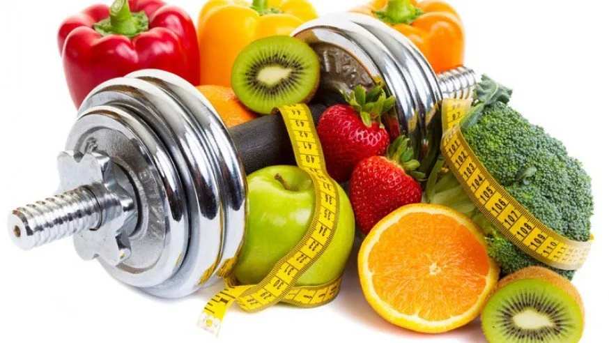

¿Cómo influye la alimentación en el rendimiento de los deportistas?
Resumen
Esta investigación se basará en ¿cómo influye la alimentación en el rendimiento de los deportistas? Este artículo se ha elaborado con el objetivo de conocer cómo afecta e influye la alimentación en diversos deportistas. Para ello, se buscarán y analizarán 5 fuentes, como videos, reportajes y revistas especializadas en deportes y nutrición, que servirán de base para desarrollar el artículo. Además, se llevará a cabo una encuesta para evaluar el impacto de la alimentación en el rendimiento deportivo de los atletas. Esta encuesta tiene 6 preguntas de selección múltiple y se aplicó a 20 deportistas de distintas disciplinas, con edades comprendidas entre 15 y 19 años. Un hallazgo destacado de la encuesta es que, en la pregunta 6, el 100% de los encuestados manifestó que la alimentación es muy importante para un desarrollo bueno y óptimo a nivel deportivo. Este resultado resalta la relevancia de una dieta adecuada en la mejora del rendimiento y la salud de los deportistas.